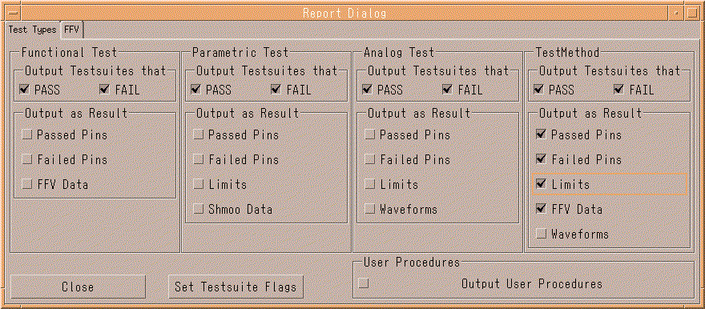

Settings in the Test Types panel
The figure below shows the Report Dialog window displaying the Test Types panel.

The Test Types panel contains five groups of checkboxes that control options for functional tests, parametric tests, analog tests, test methods, and user procedures, respectively. At the bottom of the window, you find the two buttons Close and Set Testsuite Flags.
These two buttons are also available on the FFV page of the Report Dialog window. See Settings on the FFV tab for a description of the settings you can make on that page.
Functional changes
- Introduced before SmarTest 6.3.2